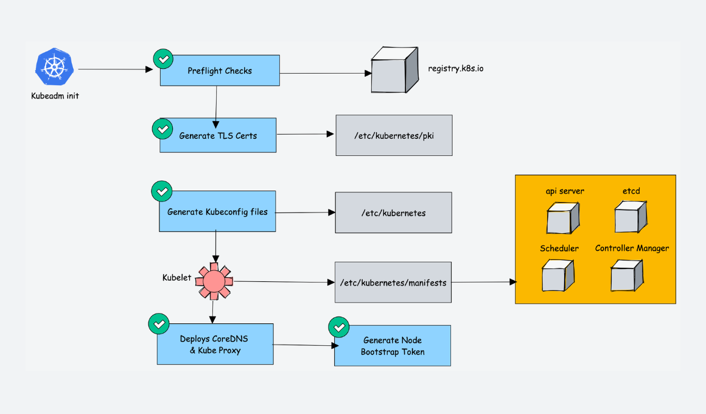

kubeadm pre actions
list and pull images
# list
$ kubeadm config images list
# or
$ kubeadm config images list --config=kubeadm-config.yml
# pull
$ kubeadm config images pull
# or
$ kubeadm config images pull --config=kubeadm-config.yml
kubeadm config
[!TIP] kubeadm saves the configuration passed to
kubeadm initin a ConfigMap namedkubeadm-configunderkube-systemnamespace.This will ensure that kubeadm actions executed in future (e.g
kubeadm upgrade) will be able to determine the actual/current cluster state and make new decisions based on that data.; Please note that:
- Before saving the
ClusterConfiguration, sensitive information like the token is stripped from the configuration- Upload of control plane node configuration can be invoked individually with the
kubeadm init phase upload-configcommand- get current
kubeadm-cfg.yml$ kubectl get cm kubeadm-config -n kube-system -o yaml # or: $ kubectl get cm kubeadm-config -n kube-system -o=jsonpath="{.data.ClusterConfiguration}"- references:
show default kubeadm-conf
$ sudo kubeadm config print init-defaults
# v1.30.4
$ sudo kubeadm config print init-defaults
apiVersion: kubeadm.k8s.io/v1beta3
bootstrapTokens:
- groups:
- system:bootstrappers:kubeadm:default-node-token
token: abcdef.0123456789abcdef # placeholder
ttl: 24h0m0s
usages:
- signing
- authentication
kind: InitConfiguration
localAPIEndpoint:
advertiseAddress: 1.2.3.4 # current IP
bindPort: 6443
nodeRegistration:
criSocket: unix:///var/run/containerd/containerd.sock # cri socket
imagePullPolicy: IfNotPresent
name: node
taints: null
---
apiServer:
timeoutForControlPlane: 4m0s
# certSANs: []
apiVersion: kubeadm.k8s.io/v1beta3
certificatesDir: /etc/kubernetes/pki
clusterName: kubernetes
controllerManager: {}
dns: {}
etcd:
local:
dataDir: /var/lib/etcd
# controlPlaneEndpoint: vip:port
imageRepository: registry.k8s.io
kind: ClusterConfiguration
kubernetesVersion: 1.30.0
networking:
dnsDomain: cluster.local
serviceSubnet: 10.96.0.0/12
# add podSubnet
scheduler: {}
show default KubeletConfiguration
- for v1.12.3
[apis] Available values: [ InitConfiguration ClusterConfiguration JoinConfiguration KubeProxyConfiguration KubeletConfiguration MasterConfiguration ]
$ sudo kubeadm config print init-defaults --component-configs KubeletConfiguration
$ sudo kubeadm config print init-defaults --component-configs KubeProxyConfiguration
# v1.12.3
$ sudo kubeadm config print-default
$ sudo kubeadm config print-defaults
$ sudo kubeadm config print-defaults --api-objects [apis]
sample kubeadm-config
# verify
$ sudo kubeadm config validate --config /etc/kubernetes/kubeadm-config.yaml
W0909 00:02:51.443429 1809154 utils.go:69] The recommended value for "clusterDNS" in "KubeletConfiguration" is: [172.21.0.10]; the provided value is: [172.21.0.3]
ok
# or
$ kubeadm config validate --config kubeadm-conf.yaml
ok
stacked etcd
apiVersion: kubeadm.k8s.io/v1beta3 kind: InitConfiguration localAPIEndpoint: bindPort: 6443 nodeRegistration: criSocket: unix:///var/run/crio/crio.sock imagePullPolicy: IfNotPresent taints: null --- apiVersion: kubeadm.k8s.io/v1beta3 kind: ClusterConfiguration apiServer: timeoutForControlPlane: 4m0s certSANs: - "k8s-api.sample.com" - "10.68.78.205" - "k8s-01.sample.com" - "10.68.78.221" - "k8s-02.sample.com" - "10.68.78.222" - "k8s-03.sample.com" - "10.68.78.223" certificatesDir: /etc/kubernetes/pki controlPlaneEndpoint: "k8s-api.sample.com:16443" imageRepository: registry.k8s.io kubernetesVersion: 1.30.0 networking: dnsDomain: cluster.local podSubnet: 192.168.0.0/16 serviceSubnet: 10.96.0.0/12 clusterName: kubernetesextenal etcd
apiVersion: kubeadm.k8s.io/v1beta2 kind: ClusterConfiguration kubernetesVersion: v1.15.3 controlPlaneEndpoint: "k8s-api:6443" etcd: external: endpoints: - https://10.69.78.40:2379 - https://10.69.78.41:2379 - https://10.69.78.42:2379 caFile: /etc/etcd/ssl/ca.pem certFile: /etc/etcd/ssl/client.pem keyFile: /etc/etcd/ssl/client-key.pem networking: dnsDomain: cluster.local podSubnet: 10.244.0.0/16 serviceSubnet: 10.96.0.0/12 apiServer: certSANs: - 10.69.78.15 - k8s-api - 10.69.78.40 - k8s-01 - 10.69.78.41 - k8s-02 - 10.69.78.42 - k8s-03 extraArgs: etcd-cafile: /etc/etcd/ssl/ca.pem etcd-certfile: /etc/etcd/ssl/client.pem etcd-keyfile: /etc/etcd/ssl/client-key.pem timeoutForControlPlane: 4m0s imageRepository: k8s.gcr.io clusterName: "kubernetes"full kubeadm from kubespray ( extenal etcd )
apiVersion: kubeadm.k8s.io/v1beta3 kind: InitConfiguration localAPIEndpoint: advertiseAddress: 10.68.78.221 # current IP bindPort: 6443 nodeRegistration: name: "k8s-01" # node name taints: - effect: NoSchedule key: node-role.kubernetes.io/control-plane criSocket: unix:///var/run/crio/crio.sock --- apiVersion: kubeadm.k8s.io/v1beta3 kind: ClusterConfiguration clusterName: cluster.local etcd: external: endpoints: - https://10.68.78.221:2379 - https://10.68.78.222:2379 - https://10.68.78.223:2379 caFile: /etc/ssl/etcd/ssl/ca.pem certFile: /etc/ssl/etcd/ssl/node-k8s-01.pem keyFile: /etc/ssl/etcd/ssl/node-k8s-01-key.pem dns: imageRepository: registry.k8s.io/coredns imageTag: v1.11.1 networking: dnsDomain: cluster.local serviceSubnet: "172.21.0.0/16" podSubnet: "10.244.0.0/16" kubernetesVersion: v1.30.4 controlPlaneEndpoint: k8s-api.sample.com:16443 certificatesDir: /etc/kubernetes/ssl imageRepository: registry.k8s.io apiServer: extraArgs: etcd-compaction-interval: "5m0s" default-not-ready-toleration-seconds: "300" default-unreachable-toleration-seconds: "300" anonymous-auth: "True" authorization-mode: Node,RBAC bind-address: 0.0.0.0 apiserver-count: "3" endpoint-reconciler-type: lease service-node-port-range: 30000-32767 service-cluster-ip-range: "172.21.0.0/16" kubelet-preferred-address-types: "InternalDNS,InternalIP,Hostname,ExternalDNS,ExternalIP" profiling: "False" request-timeout: "1m0s" enable-aggregator-routing: "False" service-account-lookup: "True" storage-backend: etcd3 allow-privileged: "true" event-ttl: 1h0m0s extraVolumes: - name: etc-pki-tls hostPath: /etc/pki/tls mountPath: /etc/pki/tls readOnly: true - name: etc-pki-ca-trust hostPath: /etc/pki/ca-trust mountPath: /etc/pki/ca-trust readOnly: true certSANs: - "kubernetes" - "kubernetes.default" - "kubernetes.default.svc" - "kubernetes.default.svc.cluster.local" - "172.21.0.1" - "localhost" - "127.0.0.1" - "10.68.78.205" - "k8s-api.sample.com" - "10.68.78.221" - "k8s-01" - "k8s-01.sample.com" - "10.68.78.222" - "k8s-02" - "k8s-02.sample.com" - "10.68.78.223" - "k8s-03" - "k8s-03.sample.com" timeoutForControlPlane: 5m0s controllerManager: extraArgs: node-monitor-grace-period: 40s node-monitor-period: 5s cluster-cidr: "10.244.0.0/16" service-cluster-ip-range: "172.21.0.0/16" allocate-node-cidrs: "false" profiling: "False" terminated-pod-gc-threshold: "12500" bind-address: 0.0.0.0 leader-elect-lease-duration: 15s leader-elect-renew-deadline: 10s configure-cloud-routes: "false" scheduler: extraArgs: bind-address: 0.0.0.0 config: /etc/kubernetes/kubescheduler-config.yaml profiling: "False" extraVolumes: - name: kubescheduler-config hostPath: /etc/kubernetes/kubescheduler-config.yaml mountPath: /etc/kubernetes/kubescheduler-config.yaml readOnly: true --- apiVersion: kubeproxy.config.k8s.io/v1alpha1 kind: KubeProxyConfiguration bindAddress: 0.0.0.0 clientConnection: acceptContentTypes: burst: 10 contentType: application/vnd.kubernetes.protobuf kubeconfig: qps: 5 clusterCIDR: "10.244.0.0/16" configSyncPeriod: 15m0s conntrack: maxPerCore: 32768 min: 131072 tcpCloseWaitTimeout: 1h0m0s tcpEstablishedTimeout: 24h0m0s enableProfiling: False healthzBindAddress: 0.0.0.0:10256 hostnameOverride: "k8s-01" # node name iptables: masqueradeAll: False masqueradeBit: 14 minSyncPeriod: 0s syncPeriod: 30s ipvs: excludeCIDRs: [] minSyncPeriod: 0s scheduler: rr syncPeriod: 30s strictARP: True tcpTimeout: 0s tcpFinTimeout: 0s udpTimeout: 0s metricsBindAddress: 127.0.0.1:10249 mode: ipvs nodePortAddresses: [] oomScoreAdj: -999 portRange: --- apiVersion: kubelet.config.k8s.io/v1beta1 kind: KubeletConfiguration clusterDNS: - 172.21.0.3
kubeadm init

environment
[!TIP|label:see also]
basic environment
[!TIP|label:see also]
pre-install
# rhel/centos $ sudo dnf install -y conntrack-tools socat ipvsadm ipset yum-utils jq \ bash-completion net-tools htop rsync rsync-daemon tracerouteswap
$ sudo swapoff -a $ grep -q -E '^[^#]*swap' /etc/fstab && sudo sed -re 's:^[^#]*swap.*:# &:' -i /etc/fstabselinux
$ sudo setenforce 0 $ sudo sed -i 's/^SELINUX=enforcing$/SELINUX=permissive/' /etc/selinux/configsysctl
$ sudo grep -q -E '^[^#]*ipv4.ip_forward' /etc/sysctl.conf && sudo sed -re 's:^[^#]*ipv4.ip_forward.*:# &:' -i /etc/sysctl.conf $ sudo bash -c "cat >> /etc/sysctl.d/k8s.conf" << EOF net.ipv4.ip_forward = 1 net.ipv4.ip_nonlocal_bind = 1 vm.swappiness = 0 net.bridge.bridge-nf-call-ip6tables = 1 net.bridge.bridge-nf-call-iptables = 1 EOF $ sudo sysctl -p /etc/sysctl.conf $ sudo sysctl -p /etc/sysctl.d/k8s.conf $ sudo sysctl --systemmodules
$ sudo modprobe br_netfilter $ sudo modprobe overlay $ sudo modprobe bridge # optional $ sudo bash -c "cat /etc/modules-load.d/k8s.conf" << EOF overlay br_netfilter bridge EOF # check $ sudo lsmod | grep br_netfilter # module for ipvs (optional) $ cat << EOF >> ./ipvs.module modprobe -- ip_vs modprobe -- ip_vs_sh modprobe -- ip_vs_rr modprobe -- ip_vs_wrr modprobe -- nf_conntrack EOF $ chmod 755 ./ipvs.module && ./ipvs.module # or $ sudo bash -c "cat /etc/modules-load.d/ipvs.conf" << EOF ip_vs ip_vs_sh ip_vs_rr ip_vs_wrr nf_conntrack EOF $ sudo modprobe -- ip_vsfirewall
$ sudo systemctl stop firewalld $ sudo systemctl disable firewalld $ sudo systemctl mask firewalld
container runtime
-
$ CRIO_VERSION='v1.30' $ cat <<EOF | sudo tee /etc/yum.repos.d/cri-o.repo [cri-o] name=CRI-O baseurl=https://pkgs.k8s.io/addons:/cri-o:/stable:/$CRIO_VERSION/rpm/ enabled=1 gpgcheck=1 gpgkey=https://pkgs.k8s.io/addons:/cri-o:/stable:/$CRIO_VERSION/rpm/repodata/repomd.xml.key exclude=cri-o EOF $ sudo bash -c "cat >>/etc/modules-load.d/crio.conf" << EOF overlay br_netfilter EOF $ sudo dnf install -y container-selinux $ sudo dnf install -y cri-o-1.30.4-150500.1.1 --disableexcludes=cri-o $ sudo systemctl enable --now crio.service
kubernetes packages
[!NOTE|label:more versions:]
- rhel/centos
# ol8 - v1.30.4
$ cat <<EOF | sudo tee /etc/yum.repos.d/kubernetes.repo
[kubernetes]
name=Kubernetes
baseurl=https://pkgs.k8s.io/core:/stable:/v1.30/rpm/
enabled=1
gpgcheck=1
gpgkey=https://pkgs.k8s.io/core:/stable:/v1.30/rpm/repodata/repomd.xml.key
exclude=kubelet kubeadm kubectl cri-tools kubernetes-cni
EOF
# get version
$ sudo dnf search --showduplicates kubeadm | grep 1.30.4
# install
$ VERSION='1.30.4-150500.1.1'
$ sudo dnf install -y kubelet-${VERSION} kubeadm-${VERSION} kubectl-${VERSION} --disableexcludes=kubernetes
$ sudo systemctl enable --now kubelet.service
# lock kube* for auto upgrade
$ sudo tail -1 /etc/yum.repos.d/kubernetes.repo
exclude=kubelet kubeadm kubectl cri-tools kubernetes-cni
init first control plane
$ sudo kubeadm init --config kubeadm-conf.yaml --ignore-preflight-errors=all --upload-certs --v=5
$ [[ -d $HOME/.kube ]] && rm -rf $HOME/.kube
$ mkdir -p $HOME/.kube
$ sudo cp -i /etc/kubernetes/admin.conf $HOME/.kube/config
$ sudo chown $(id -u):$(id -g) $HOME/.kube/config
# re-upload certs for HA
$ sudo kubeadm init phase upload-certs --upload-certs [ --config kubeadm-conf.yaml ]
$ sudo kubeadm init --config kubeadm-conf.yaml --upload-certs --v=5
I0906 15:55:01.147439 451702 initconfiguration.go:260] loading configuration from "kubeadm-conf.yaml"
I0906 15:55:01.148518 451702 interface.go:432] Looking for default routes with IPv4 addresses
I0906 15:55:01.148530 451702 interface.go:437] Default route transits interface "ens7"
I0906 15:55:01.148815 451702 interface.go:209] Interface ens7 is up
I0906 15:55:01.148860 451702 interface.go:257] Interface "ens7" has 3 addresses :[10.68.78.221/24 10.68.78.205/32 fe80::546f:c3ff:fe29:40e/64].
I0906 15:55:01.148873 451702 interface.go:224] Checking addr 10.68.78.221/24.
I0906 15:55:01.148887 451702 interface.go:231] IP found 10.68.78.221
I0906 15:55:01.148902 451702 interface.go:263] Found valid IPv4 address 10.68.78.221 for interface "ens7".
I0906 15:55:01.148916 451702 interface.go:443] Found active IP 10.68.78.221
I0906 15:55:01.148936 451702 kubelet.go:196] the value of KubeletConfiguration.cgroupDriver is empty; setting it to "systemd"
[init] Using Kubernetes version: v1.30.0
[preflight] Running pre-flight checks
I0906 15:55:01.157167 451702 checks.go:561] validating Kubernetes and kubeadm version
I0906 15:55:01.157191 451702 checks.go:166] validating if the firewall is enabled and active
I0906 15:55:01.167842 451702 checks.go:201] validating availability of port 6443
I0906 15:55:01.168088 451702 checks.go:201] validating availability of port 10259
I0906 15:55:01.168117 451702 checks.go:201] validating availability of port 10257
I0906 15:55:01.168150 451702 checks.go:278] validating the existence of file /etc/kubernetes/manifests/kube-apiserver.yaml
I0906 15:55:01.168170 451702 checks.go:278] validating the existence of file /etc/kubernetes/manifests/kube-controller-manager.yaml
I0906 15:55:01.168180 451702 checks.go:278] validating the existence of file /etc/kubernetes/manifests/kube-scheduler.yaml
I0906 15:55:01.168188 451702 checks.go:278] validating the existence of file /etc/kubernetes/manifests/etcd.yaml
I0906 15:55:01.168203 451702 checks.go:428] validating if the connectivity type is via proxy or direct
I0906 15:55:01.168230 451702 checks.go:467] validating http connectivity to first IP address in the CIDR
I0906 15:55:01.168252 451702 checks.go:467] validating http connectivity to first IP address in the CIDR
I0906 15:55:01.168271 451702 checks.go:102] validating the container runtime
I0906 15:55:01.187238 451702 checks.go:637] validating whether swap is enabled or not
I0906 15:55:01.187313 451702 checks.go:368] validating the presence of executable crictl
I0906 15:55:01.187350 451702 checks.go:368] validating the presence of executable conntrack
I0906 15:55:01.187379 451702 checks.go:368] validating the presence of executable ip
I0906 15:55:01.187398 451702 checks.go:368] validating the presence of executable iptables
I0906 15:55:01.187414 451702 checks.go:368] validating the presence of executable mount
I0906 15:55:01.187427 451702 checks.go:368] validating the presence of executable nsenter
I0906 15:55:01.187445 451702 checks.go:368] validating the presence of executable ebtables
I0906 15:55:01.187461 451702 checks.go:368] validating the presence of executable ethtool
I0906 15:55:01.187475 451702 checks.go:368] validating the presence of executable socat
I0906 15:55:01.187497 451702 checks.go:368] validating the presence of executable tc
I0906 15:55:01.187522 451702 checks.go:368] validating the presence of executable touch
I0906 15:55:01.187536 451702 checks.go:514] running all checks
I0906 15:55:01.196133 451702 checks.go:399] checking whether the given node name is valid and reachable using net.LookupHost
I0906 15:55:01.196278 451702 checks.go:603] validating kubelet version
I0906 15:55:01.234949 451702 checks.go:128] validating if the "kubelet" service is enabled and active
I0906 15:55:01.253904 451702 checks.go:201] validating availability of port 10250
I0906 15:55:01.253971 451702 checks.go:327] validating the contents of file /proc/sys/net/ipv4/ip_forward
I0906 15:55:01.254007 451702 checks.go:201] validating availability of port 2379
I0906 15:55:01.254029 451702 checks.go:201] validating availability of port 2380
I0906 15:55:01.254056 451702 checks.go:241] validating the existence and emptiness of directory /var/lib/etcd
[preflight] Pulling images required for setting up a Kubernetes cluster
[preflight] This might take a minute or two, depending on the speed of your internet connection
[preflight] You can also perform this action in beforehand using 'kubeadm config images pull'
I0906 15:55:01.254181 451702 checks.go:830] using image pull policy: IfNotPresent
I0906 15:55:01.289887 451702 checks.go:862] image exists: registry.k8s.io/kube-apiserver:v1.30.0
I0906 15:55:01.307358 451702 checks.go:862] image exists: registry.k8s.io/kube-controller-manager:v1.30.0
I0906 15:55:01.325819 451702 checks.go:862] image exists: registry.k8s.io/kube-scheduler:v1.30.0
I0906 15:55:01.343275 451702 checks.go:862] image exists: registry.k8s.io/kube-proxy:v1.30.0
I0906 15:55:01.359979 451702 checks.go:862] image exists: registry.k8s.io/coredns/coredns:v1.11.1
I0906 15:55:01.377002 451702 checks.go:862] image exists: registry.k8s.io/pause:3.9
I0906 15:55:01.394134 451702 checks.go:862] image exists: registry.k8s.io/etcd:3.5.12-0
[certs] Using certificateDir folder "/etc/kubernetes/pki"
I0906 15:55:01.394225 451702 certs.go:112] creating a new certificate authority for ca
[certs] Generating "ca" certificate and key
I0906 15:55:01.523905 451702 certs.go:483] validating certificate period for ca certificate
[certs] Generating "apiserver" certificate and key
[certs] apiserver serving cert is signed for DNS names [k8s-01 k8s-01.sample.com k8s-02.sample.com k8s-03.sample.com kubernetes kubernetes.default kubernetes.default.svc kubernetes.default.svc.cluster.local k8s-api.sample.com] and IPs [10.96.0.1 10.68.78.221 10.68.78.205 10.68.78.222 10.68.78.223]
[certs] Generating "apiserver-kubelet-client" certificate and key
I0906 15:55:02.031600 451702 certs.go:112] creating a new certificate authority for front-proxy-ca
[certs] Generating "front-proxy-ca" certificate and key
I0906 15:55:02.161869 451702 certs.go:483] validating certificate period for front-proxy-ca certificate
[certs] Generating "front-proxy-client" certificate and key
I0906 15:55:02.252315 451702 certs.go:112] creating a new certificate authority for etcd-ca
[certs] Generating "etcd/ca" certificate and key
I0906 15:55:02.503018 451702 certs.go:483] validating certificate period for etcd/ca certificate
[certs] Generating "etcd/server" certificate and key
[certs] etcd/server serving cert is signed for DNS names [k8s-01 localhost] and IPs [10.68.78.221 127.0.0.1 ::1]
[certs] Generating "etcd/peer" certificate and key
[certs] etcd/peer serving cert is signed for DNS names [k8s-01 localhost] and IPs [10.68.78.221 127.0.0.1 ::1]
[certs] Generating "etcd/healthcheck-client" certificate and key
[certs] Generating "apiserver-etcd-client" certificate and key
I0906 15:55:03.093628 451702 certs.go:78] creating new public/private key files for signing service account users
[certs] Generating "sa" key and public key
[kubeconfig] Using kubeconfig folder "/etc/kubernetes"
I0906 15:55:03.488774 451702 kubeconfig.go:112] creating kubeconfig file for admin.conf
W0906 15:55:03.488970 451702 endpoint.go:57] [endpoint] WARNING: port specified in controlPlaneEndpoint overrides bindPort in the controlplane address
[kubeconfig] Writing "admin.conf" kubeconfig file
I0906 15:55:03.762480 451702 kubeconfig.go:112] creating kubeconfig file for super-admin.conf
W0906 15:55:03.762653 451702 endpoint.go:57] [endpoint] WARNING: port specified in controlPlaneEndpoint overrides bindPort in the controlplane address
[kubeconfig] Writing "super-admin.conf" kubeconfig file
I0906 15:55:03.904203 451702 kubeconfig.go:112] creating kubeconfig file for kubelet.conf
W0906 15:55:03.904377 451702 endpoint.go:57] [endpoint] WARNING: port specified in controlPlaneEndpoint overrides bindPort in the controlplane address
[kubeconfig] Writing "kubelet.conf" kubeconfig file
I0906 15:55:04.503418 451702 kubeconfig.go:112] creating kubeconfig file for controller-manager.conf
W0906 15:55:04.503611 451702 endpoint.go:57] [endpoint] WARNING: port specified in controlPlaneEndpoint overrides bindPort in the controlplane address
[kubeconfig] Writing "controller-manager.conf" kubeconfig file
I0906 15:55:04.802570 451702 kubeconfig.go:112] creating kubeconfig file for scheduler.conf
W0906 15:55:04.802724 451702 endpoint.go:57] [endpoint] WARNING: port specified in controlPlaneEndpoint overrides bindPort in the controlplane address
[kubeconfig] Writing "scheduler.conf" kubeconfig file
[etcd] Creating static Pod manifest for local etcd in "/etc/kubernetes/manifests"
I0906 15:55:04.997083 451702 local.go:65] [etcd] wrote Static Pod manifest for a local etcd member to "/etc/kubernetes/manifests/etcd.yaml"
[control-plane] Using manifest folder "/etc/kubernetes/manifests"
[control-plane] Creating static Pod manifest for "kube-apiserver"
I0906 15:55:04.997123 451702 manifests.go:103] [control-plane] getting StaticPodSpecs
I0906 15:55:04.997262 451702 certs.go:483] validating certificate period for CA certificate
I0906 15:55:04.997309 451702 manifests.go:129] [control-plane] adding volume "ca-certs" for component "kube-apiserver"
I0906 15:55:04.997316 451702 manifests.go:129] [control-plane] adding volume "etc-pki" for component "kube-apiserver"
I0906 15:55:04.997320 451702 manifests.go:129] [control-plane] adding volume "k8s-certs" for component "kube-apiserver"
I0906 15:55:04.997876 451702 manifests.go:158] [control-plane] wrote static Pod manifest for component "kube-apiserver" to "/etc/kubernetes/manifests/kube-apiserver.yaml"
[control-plane] Creating static Pod manifest for "kube-controller-manager"
I0906 15:55:04.997895 451702 manifests.go:103] [control-plane] getting StaticPodSpecs
I0906 15:55:04.998022 451702 manifests.go:129] [control-plane] adding volume "ca-certs" for component "kube-controller-manager"
I0906 15:55:04.998030 451702 manifests.go:129] [control-plane] adding volume "etc-pki" for component "kube-controller-manager"
I0906 15:55:04.998033 451702 manifests.go:129] [control-plane] adding volume "flexvolume-dir" for component "kube-controller-manager"
I0906 15:55:04.998036 451702 manifests.go:129] [control-plane] adding volume "k8s-certs" for component "kube-controller-manager"
I0906 15:55:04.998044 451702 manifests.go:129] [control-plane] adding volume "kubeconfig" for component "kube-controller-manager"
I0906 15:55:04.998582 451702 manifests.go:158] [control-plane] wrote static Pod manifest for component "kube-controller-manager" to "/etc/kubernetes/manifests/kube-controller-manager.yaml"
[control-plane] Creating static Pod manifest for "kube-scheduler"
I0906 15:55:04.998598 451702 manifests.go:103] [control-plane] getting StaticPodSpecs
I0906 15:55:04.998722 451702 manifests.go:129] [control-plane] adding volume "kubeconfig" for component "kube-scheduler"
I0906 15:55:04.999070 451702 manifests.go:158] [control-plane] wrote static Pod manifest for component "kube-scheduler" to "/etc/kubernetes/manifests/kube-scheduler.yaml"
I0906 15:55:04.999092 451702 kubelet.go:68] Stopping the kubelet
[kubelet-start] Writing kubelet environment file with flags to file "/var/lib/kubelet/kubeadm-flags.env"
[kubelet-start] Writing kubelet configuration to file "/var/lib/kubelet/config.yaml"
[kubelet-start] Starting the kubelet
[wait-control-plane] Waiting for the kubelet to boot up the control plane as static Pods from directory "/etc/kubernetes/manifests"
[kubelet-check] Waiting for a healthy kubelet at http://127.0.0.1:10248/healthz. This can take up to 4m0s
[kubelet-check] The kubelet is healthy after 1.001504321s
[api-check] Waiting for a healthy API server. This can take up to 4m0s
I0906 15:55:07.167743 451702 with_retry.go:234] Got a Retry-After 1s response for attempt 1 to https://k8s-api.sample.com:16443/healthz?timeout=10s
I0906 15:55:08.169181 451702 with_retry.go:234] Got a Retry-After 1s response for attempt 2 to https://k8s-api.sample.com:16443/healthz?timeout=10s
I0906 15:55:09.169991 451702 with_retry.go:234] Got a Retry-After 1s response for attempt 3 to https://k8s-api.sample.com:16443/healthz?timeout=10s
I0906 15:55:10.170866 451702 with_retry.go:234] Got a Retry-After 1s response for attempt 4 to https://k8s-api.sample.com:16443/healthz?timeout=10s
[api-check] The API server is healthy after 4.009771869s
I0906 15:55:10.178049 451702 kubeconfig.go:608] ensuring that the ClusterRoleBinding for the kubeadm:cluster-admins Group exists
I0906 15:55:10.179174 451702 kubeconfig.go:681] creating the ClusterRoleBinding for the kubeadm:cluster-admins Group by using super-admin.conf
I0906 15:55:10.186100 451702 uploadconfig.go:112] [upload-config] Uploading the kubeadm ClusterConfiguration to a ConfigMap
[upload-config] Storing the configuration used in ConfigMap "kubeadm-config" in the "kube-system" Namespace
I0906 15:55:10.195759 451702 uploadconfig.go:126] [upload-config] Uploading the kubelet component config to a ConfigMap
[kubelet] Creating a ConfigMap "kubelet-config" in namespace kube-system with the configuration for the kubelets in the cluster
I0906 15:55:10.202391 451702 uploadconfig.go:131] [upload-config] Preserving the CRISocket information for the control plane
I0906 15:55:10.202417 451702 patchnode.go:31] [patchnode] Uploading the CRI Socket information "unix:///var/run/crio/crio.sock" to the Node API object "k8s-01" as an annotation
[upload-certs] Storing the certificates in Secret "kubeadm-certs" in the "kube-system" Namespace
[upload-certs] Using certificate key:
35c07b0896a3075ffa0df5f6dfbeb1a23119e3ffb9a6aa943135eb924601aea8
[mark-control-plane] Marking the node k8s-01 as control-plane by adding the labels: [node-role.kubernetes.io/control plane.kubernetes.io/exclude-from-external-load-balancers]
[mark-control-plane] Marking the node k8s-01 as control-plane by adding the taints [node-role.kubernetes.io/control-plane:NoSchedule]
[bootstrap-token] Using token: umo0bu.h7c4rda7p2sovlk2
[bootstrap-token] Configuring bootstrap tokens, cluster-info ConfigMap, RBAC Roles
[bootstrap-token] Configured RBAC rules to allow Node Bootstrap tokens to get nodes
[bootstrap-token] Configured RBAC rules to allow Node Bootstrap tokens to post CSRs in order for nodes to get long term certificate credentials
[bootstrap-token] Configured RBAC rules to allow the csrapprover controller automatically approve CSRs from a Node Bootstrap Token
[bootstrap-token] Configured RBAC rules to allow certificate rotation for all node client certificates in the cluster
[bootstrap-token] Creating the "cluster-info" ConfigMap in the "kube-public" namespace
I0906 15:55:12.251287 451702 clusterinfo.go:47] [bootstrap-token] loading admin kubeconfig
I0906 15:55:12.251670 451702 clusterinfo.go:58] [bootstrap-token] copying the cluster from admin.conf to the bootstrap kubeconfig
I0906 15:55:12.251843 451702 clusterinfo.go:70] [bootstrap-token] creating/updating ConfigMap in kube-public namespace
I0906 15:55:12.403197 451702 request.go:629] Waited for 151.280911ms due to client-side throttling, not priority and fairness, request: POST:https://k8s-api.sample.com:16443/api/v1/namespaces/kube-public/configmaps?timeout=10s
I0906 15:55:12.406139 451702 clusterinfo.go:84] creating the RBAC rules for exposing the cluster-info ConfigMap in the kube-public namespace
I0906 15:55:12.410852 451702 kubeletfinalize.go:91] [kubelet-finalize] Assuming that kubelet client certificate rotation is enabled: found "/var/lib/kubelet/pki/kubelet-client-current.pem"
[kubelet-finalize] Updating "/etc/kubernetes/kubelet.conf" to point to a rotatable kubelet client certificate and key
I0906 15:55:12.411566 451702 kubeletfinalize.go:145] [kubelet-finalize] Restarting the kubelet to enable client certificate rotation
I0906 15:55:12.803876 451702 request.go:629] Waited for 198.318189ms due to client-side throttling, not priority and fairness, request: POST:https://k8s-api.sample.com:16443/api/v1/namespaces/kube-system/configmaps?timeout=10s
I0906 15:55:13.003747 451702 request.go:629] Waited for 192.323644ms due to client-side throttling, not priority and fairness, request: POST:https://k8s-api.sample.com:16443/api/v1/namespaces/kube-system/serviceaccounts?timeout=10s
I0906 15:55:13.203497 451702 request.go:629] Waited for 189.318029ms due to client-side throttling, not priority and fairness, request: POST:https://k8s-api.sample.com:16443/api/v1/namespaces/kube-system/services?timeout=10s
[addons] Applied essential addon: CoreDNS
W0906 15:55:13.208744 451702 endpoint.go:57] [endpoint] WARNING: port specified in controlPlaneEndpoint overrides bindPort in the controlplane address
I0906 15:55:13.403414 451702 request.go:629] Waited for 193.327555ms due to client-side throttling, not priority and fairness, request: POST:https://k8s-api.sample.com:16443/api/v1/namespaces/kube-system/configmaps?timeout=10s
I0906 15:55:13.603875 451702 request.go:629] Waited for 192.131734ms due to client-side throttling, not priority and fairness, request: POST:https://k8s-api.sample.com:16443/api/v1/namespaces/kube-system/serviceaccounts?timeout=10s
[addons] Applied essential addon: kube-proxy
Your Kubernetes control-plane has initialized successfully!
To start using your cluster, you need to run the following as a regular user:
mkdir -p $HOME/.kube
sudo cp -i /etc/kubernetes/admin.conf $HOME/.kube/config
sudo chown $(id -u):$(id -g) $HOME/.kube/config
Alternatively, if you are the root user, you can run:
export KUBECONFIG=/etc/kubernetes/admin.conf
You should now deploy a pod network to the cluster.
Run "kubectl apply -f [podnetwork].yaml" with one of the options listed at:
https://kubernetes.io/docs/concepts/cluster-administration/addons/
You can now join any number of the control plane running the following command on each as root:
kubeadm join k8s-api.sample.com:16443 --token umo0bu.h7c4rda7p2sovlk2 \
--discovery-token-ca-cert-hash sha256:16ec52ecec38a27cd42006451bf5403655f8f3c1fb74f54f1c019b5937ce8c87 \
--control-plane --certificate-key 35c07b0896a3075ffa0df5f6dfbeb1a23119e3ffb9a6aa943135eb924601aea8
Please note that the certificate-key gives access to cluster sensitive data, keep it secret!
As a safeguard, uploaded-certs will be deleted in two hours; If necessary, you can use
"kubeadm init phase upload-certs --upload-certs" to reload certs afterward.
Then you can join any number of worker nodes by running the following on each as root:
kubeadm join k8s-api.sample.com:16443 --token umo0bu.h7c4rda7p2sovlk2 \
--discovery-token-ca-cert-hash sha256:16ec52ecec38a27cd42006451bf5403655f8f3c1fb74f54f1c019b5937ce8c87
kubeadm join
[!TIP|label:reference:]
- kubeadm join
openssl x509 -pubkey -in /etc/kubernetes/pki/ca.crt | openssl rsa -pubin -outform der 2>/dev/null | openssl dgst -sha256 -hex | sed 's/^.* //'- Using init phases with kubeadm
sudo kubeadm init phase control-plane controller-manager --helpsudo kubeadm init phase control-plane --help- Uploading control-plane certificates to the cluster
- kubeadm join
- How do I find the join command for kubeadm on the master?
join as control plane
[!NOTE|label:join command:] sync certs if init without
--upload-certs# in k8s-01 $ echo {02..03} | fmt -1 | while read -r _node; do sudo rsync -avzrlpgoDP /etc/kubernetes/pki root@k8s-${_node}:/etc/kubernetes/pki done # or: https://blog.csdn.net/Weixiaohuai/article/details/135478349 $ sudo scp /etc/kubernetes/admin.conf root@k8s-02:/etc/kubernetes/ $ sudo scp /etc/kubernetes/pki/{ca.*,sa.*,front-proxy-ca.*} root@k8s-02:/etc/kubernetes/pki/ $ sudo scp /etc/kubernetes/pki/etcd/ca.* root@k8s-02:/etc/kubernetes/pki/etc/
# in k8s-02 and k8s-03
$ sudo kubeadm join k8s-api.sample.com:16443 --token umo0bu.h7c4rda7p2sovlk2 \
--discovery-token-ca-cert-hash sha256:16ec52ecec38a27cd42006451bf5403655f8f3c1fb74f54f1c019b5937ce8c87 \
--control-plane --certificate-key 35c07b0896a3075ffa0df5f6dfbeb1a23119e3ffb9a6aa943135eb924601aea8 \
--v=5
$ [[ -d $HOME/.kube ]] && rm -rf $HOME/.kube
$ mkdir -p $HOME/.kube
$ sudo cp -i /etc/kubernetes/admin.conf $HOME/.kube/config
$ sudo chown $(id -u):$(id -g) $HOME/.kube/config
join as worker node
$ sudo swapoff -a
$ grep -q -E '^[^#]*swap' /etc/fstab && sudo sed -re 's:^[^#]*swap.*:# &:' -i /etc/fstab
$ sudo kubeadm join k8s-api.sample.com:16443 --token umo0bu.h7c4rda7p2sovlk2 \
--discovery-token-ca-cert-hash sha256:16ec52ecec38a27cd42006451bf5403655f8f3c1fb74f54f1c019b5937ce8c87 \
--v=5
get join command
$ sudo kubeadm token create --print-join-command
# or
$ sudo kubeadm token create --print-join-command --ttl=0
# list
$ sudo kubeadm token list
- token-based discovery with CA pinning
$ openssl x509 -pubkey -in /etc/kubernetes/pki/ca.crt | openssl rsa -pubin -outform der 2>/dev/null | openssl dgst -sha256 -hex | sed 's/^.* //'- for worker nodes
$ kubeadm join --discovery-token abcdef.1234567890abcdef --discovery-token-ca-cert-hash sha256:1234..cdef 1.2.3.4:6443 - for control planes
$ kubeadm join --discovery-token abcdef.1234567890abcdef --discovery-token-ca-cert-hash sha256:1234..cdef --control-plane 1.2.3.4:6443
- for worker nodes
retrive join command
token ca hash
$ openssl x509 -pubkey -in /etc/kubernetes/pki/ca.crt \ | openssl rsa -pubin -outform der 2>/dev/null \ | openssl dgst -sha256 -hex \ | sed 's/^.* //'bootstrap token
$ kubeadm token listfinal command
$ kubeadm join <ip-address>:6443\ --token=<bootstrap-token> \ --discovery-token-ca-cert-hash sha256:<ca-hash>function
# get the join command from the kube master CERT_HASH=$(openssl x509 -pubkey -in /etc/kubernetes/pki/ca.crt \ | openssl rsa -pubin -outform der 2>/dev/null \ | openssl dgst -sha256 -hex \ | sed 's/^.* //') TOKEN=$(kubeadm token list -o json | jq -r '.token' | head -1) IP=$(kubectl get nodes -lnode-role.kubernetes.io/master -o json \ | jq -r '.items[0].status.addresses[] | select(.type=="InternalIP") | .address') PORT=6443 echo "sudo kubeadm join $IP:$PORT --token=$TOKEN --discovery-token-ca-cert-hash sha256:$CERT_HASH"
kubeadm upgrade
upgrade kubeadm
$ sudo killall -s SIGTERM kube-apiserver # trigger a graceful kube-apiserver shutdown
$ sleep 20
# upgrade kube*
$ sudo yum list --showduplicates kubeadm --disableexcludes=kubernetes
$ VERSION=1.31.x
$ sudo dnf install -y kubeadm-"${VERSION}-*" --disableexcludes=kubernetes
upgrade cluster
# check upgrade plan
$ sudo kubeadm upgrade plan
# first control plane
$ sudo kubeadm upgrade apply v1.31.x
# peers control planes
$ sudo kubeadm upgrade node
# drain the node
$ kubectl drain <node-to-drain> --ignore-daemonsets
upgrade kubelet and kubectl
$ sudo dnf install -y kubelet-"${VERSION}-*" kubectl-'${VERSION}-*' --disableexcludes=kubernetes
$ sudo systemctl daemon-reload
$ sudo systemctl restart kubelet
# uncordon the node
$ kubectl uncordon <node-to-uncordon>
reconfigure cluster
[!NOTE|label:references:]
- Reconfiguring a kubeadm cluster
- recommanded commands:
KUBECONFIG=/etc/kubernetes/admin.conf KUBE_EDITOR=nano kubectl edit <parameters>- components-name:
apiServercontrollerManagerscheduleretcd
# config map
$ kubectl edit cm -n kube-system kubeadm-config
# certs
$ kubeadm init phase certs <component-name> --config /path/to/kubeadm-config.yaml
# get new /etc/kubernetes/manifests
# for kubernetes control plane components
$ kubeadm init phase control-plane <component-name> --config <config-file>
# for local etcd
$ kubeadm init phase etcd local --config <config-file>
# kubelet
$ kubectl edit cm -n kube-system kubelet-config
# kubeproxy
$ kubectl edit cm -n kube-system kube-proxy
# restart kube-proxy pods
$ kubectl delete po -n kube-system kube-proxy.+
# coredns
$ kubectl edit deployment -n kube-system coredns
$ kubectl edit service -n kube-system kube-dns
# restart coredns
$ kubectl delete po -n kube-system coredns.+
kubeadm reset and teardown
[!NOTE|label:see also:]
$ kubectl drain <node name> --delete-local-data --force --ignore-daemonsets
$ kubectl delete node <node name>
$ sudo kubeadm reset --v=5 -f
# or
$ sudo kubeadm reset --cri-socket /var/run/crio/crio.sock --v=5 -f
$ sudo systemctl stop kubelet
$ sudo systemctl stop docker
$ sudo systemctl stop crio
$ sudo systemctl disable --now kubelet
$ sudo systemctl disable --now docker
$ sudo systemctl disable --now crio
$ docker system prune -a -f
# interfaces
# cni0
$ sudo ifconfig cni0 down
$ sudo ip link delete cni0
# calico
$ sudo ifconfig vxlan.calico down
$ sudo ip link delete vxlan.calico
# flannel
$ sudo ifconfig flannel.1 down
$ sudo ip link delete flannel.1
$ sudo rm -rf /etc/kubernetes /var/lib/cni /var/lib/kubelet/* /etc/cni/net.d /etc/cni/ ~/.kube/
$ sudo rm -rf /var/log/pods
$ sudo apt-get purge kubeadm kubectl kubelet kubernetes-cni kube*
$ sudo apt-get autoremove
# or
$ sudo dnf remove kubeadm kubectl kubelet kubernetes-cni kube* cri-o cri-tools --disableexcludes=kubernetes
$ sudo dnf clean all
# iptables
$ sudo iptables -P INPUT ACCEPT && sudo iptables -P FORWARD ACCEPT && sudo iptables -P OUTPUT ACCEPT
$ sudo iptables -F && sudo iptables -t nat -F && sudo iptables -t mangle -F && sudo iptables -X
# via ipvs
$ sudo ipvsadm -C
yum with versionlock
$ sudo yum versionlock list Loaded plugins: fastestmirror, versionlock 0:kubeadm-1.15.3-0.* 0:kubectl-1.15.3-0.* 0:kubelet-1.15.3-0.* 0:kubernetes-cni-0.7.5-0.* 3:docker-ce-18.09.9-3.el7.* 1:docker-ce-cli-18.09.9-3.el7.* versionlock list done $ sudo yum versionlock clear Loaded plugins: fastestmirror, versionlock versionlock cleared $ sudo yum versionlock list Loaded plugins: fastestmirror, versionlock versionlock list done
troubleshooting
error: open /var/lib/kubelet/config.yaml: no such file or directoryNov 17 19:25:19 kube-node-01 systemd[1]: Started kubelet: The Kubernetes Node Agent. Nov 17 19:25:19 kube-node-01 kubelet[28335]: F1117 19:25:19.391266 28335 server.go:190] failed to load Kubelet config file /var/lib/kubelet/config.yaml, error failed to read kubelet config file "/var/lib/kubelet/config.yaml", error: open /var/lib/kubelet/config.yaml: no such file or directory Nov 17 19:25:19 kube-node-01 systemd[1]: kubelet.service: Main process exited, code=exited, status=255/n/a Nov 17 19:25:19 kube-node-01 systemd[1]: kubelet.service: Failed with result 'exit-code'.solution:
controller: kubeadm init phase kubelet-start
$ kubeadm init phase kubelet-start $ swapoff -a $ sudo bash -c "sed -e 's:^\\(.*swap.*\\)$:# \\1:' -i /etc/fstab"node:
$ kubeadm join api.kubernetes.com:6443 \ --token 8*****.***************a \ --discovery-token-ca-cert-hash sha256:e**************************************************************5 \ --ignore-preflight-errors=all
-
[!NOTE|label:current system:]
- os:
$ printf "$(uname -srm)\n$(cat /etc/os-release)\n" Linux 5.15.0-107-generic x86_64 NAME="Ubuntu" VERSION="20.04.6 LTS (Focal Fossa)" ID=ubuntu ID_LIKE=debian PRETTY_NAME="Ubuntu 20.04.6 LTS" VERSION_ID="20.04" HOME_URL="https://www.ubuntu.com/" SUPPORT_URL="https://help.ubuntu.com/" BUG_REPORT_URL="https://bugs.launchpad.net/ubuntu/" PRIVACY_POLICY_URL="https://www.ubuntu.com/legal/terms-and-policies/privacy-policy" VERSION_CODENAME=focal UBUNTU_CODENAME=focal - packages:
$ apt list --installed | grep -E 'kube|container|cri-tools|socat|cni' containerd.io/focal,now 1.6.33-1 amd64 [installed] cri-tools/unknown,now 1.28.0-1.1 amd64 [installed,automatic] kubeadm/unknown,now 1.28.8-1.1 amd64 [installed,upgradable to: 1.28.10-1.1] kubectl/unknown,now 1.28.8-1.1 amd64 [installed,upgradable to: 1.28.10-1.1] kubelet/unknown,now 1.28.8-1.1 amd64 [installed,upgradable to: 1.28.10-1.1] kubernetes-cni/unknown,now 1.2.0-2.1 amd64 [installed,automatic] socat/focal,now 1.7.3.3-2 amd64 [installed,automatic]
error message
$ sudo kubeadm join 192.168.1.100:6443 --token yspydx.6bhxbnvzojb9vxbr --discovery-token-ca-cert-hash sha256:ef2971478d52cfee63a543fe7ad6f97423d2a943456ff93641c705fc3e82b6c4 --v=5 [preflight] Running pre-flight checks [WARNING Swap]: swap is enabled; production deployments should disable swap unless testing the NodeSwap feature gate of the kubelet error execution phase preflight: [preflight] Some fatal errors occurred: [ERROR CRI]: container runtime is not running: output: time="2024-06-07T19:42:13-07:00" level=fatal msg="validate service connection: validate CRI v1 runtime API for endpoint \"unix:///var/run/containerd/containerd.sock\": rpc error: code = Unimplemented desc = unknown service runtime.v1.RuntimeService" , error: exit status 1solution
# uninstall `containerd` if necessary $ sudo apt remove -y containerd # install containerd.io instead of $ sudo apt install -y containerd.io # remove default config file $ sudo mv /etc/containerd/config.toml{,.bak} # restart containerd services $ sudo systemctl restart containerd
- os:
verify
cluster
# show endpoint $ kubectl get endpoints kubernetes NAME ENDPOINTS AGE kubernetes 10.68.78.221:6443,10.68.78.222:6443,10.68.78.223:6443 19h $ kubectl get cs Warning: v1 ComponentStatus is deprecated in v1.19+ NAME STATUS MESSAGE ERROR controller-manager Healthy ok scheduler Healthy ok etcd-0 Healthy ok $ kubectl get no -o wide NAME STATUS ROLES AGE VERSION INTERNAL-IP EXTERNAL-IP OS-IMAGE KERNEL-VERSION CONTAINER-RUNTIME k8s-01 Ready control-plane 19h v1.30.4 10.68.78.221 <none> Oracle Linux Server 8.10 5.15.0-202.135.2.el8uek.x86_64 cri-o://1.30.3 k8s-02 Ready control-plane 19h v1.30.4 10.68.78.222 <none> Oracle Linux Server 8.10 5.15.0-202.135.2.el8uek.x86_64 cri-o://1.30.3 k8s-03 Ready control-plane 19h v1.30.4 10.68.78.223 <none> Oracle Linux Server 8.10 5.15.0-202.135.2.el8uek.x86_64 cri-o://1.30.3nginx deployment
$ cat << EOF | kubectl apply -f - apiVersion: v1 kind: Namespace metadata: name: nginx --- apiVersion: apps/v1 kind: Deployment metadata: name: nginx namespace: nginx spec: replicas: 1 selector: matchLabels: app: nginx template: metadata: labels: app: nginx spec: containers: - name: nginx image: nginx:alpine ports: - containerPort: 80 --- apiVersion: v1 kind: Service metadata: name: nginx namespace: nginx spec: type: NodePort selector: app: nginx ports: - name: http port: 80 targetPort: 80 EOF $ curl -I <running-node.ip>:32520
references
- scripts:
- installation:
- * install tools
- * Bootstrapping clusters with kubeadm
- * 使用 kubeadm 创建集群
- * kubeadm 搭建 HA kubernetes 集群
- * kubeadm Configuration (v1beta3)
- * Implementation details
- * How To Setup A Three Node Kubernetes Cluster Step By Step
- cURLing the Kubernetes API server
- Troubleshooting kubeadm
- * codefarm
- authenticating with bootstrap token
- kubernetes/design-proposals-archive
- design-proposals-archive/cluster-lifecycle/cluster-deployment.md
- How to Upgrade Kubernetes Cluster Using Kubeadm?
- 在 Kubernetes 上最小化安装 KubeSphere
- management:
- upgrade:
- Upgrading kubeadm clusters
- kubeadm 集群升级
$ kubeadm upgrade plan --config /etc/kubernetes/kubeadm.yaml- network
[!NOTE|label:references:]